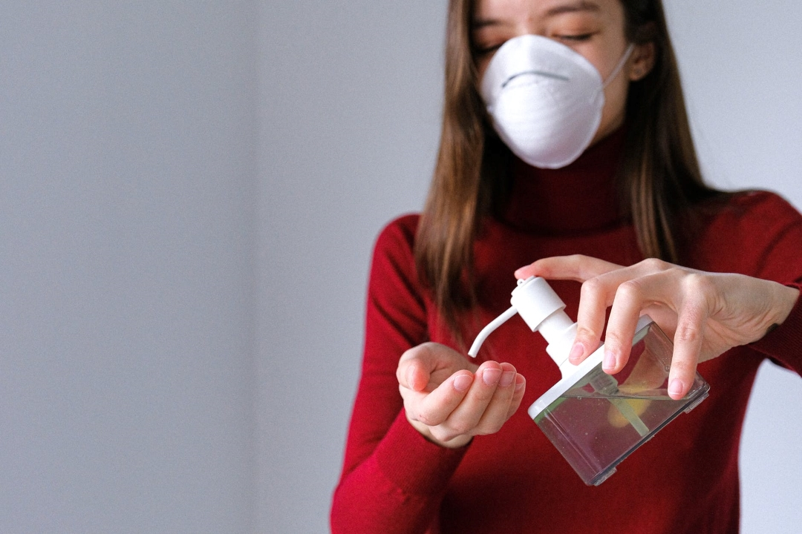
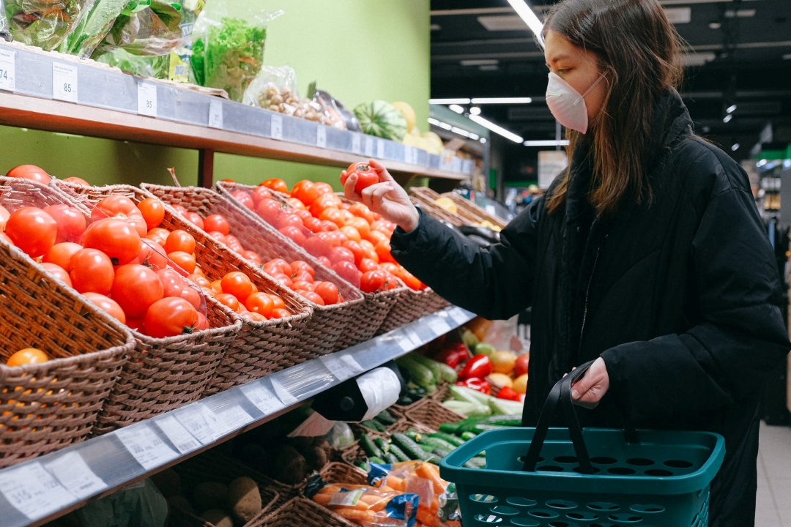
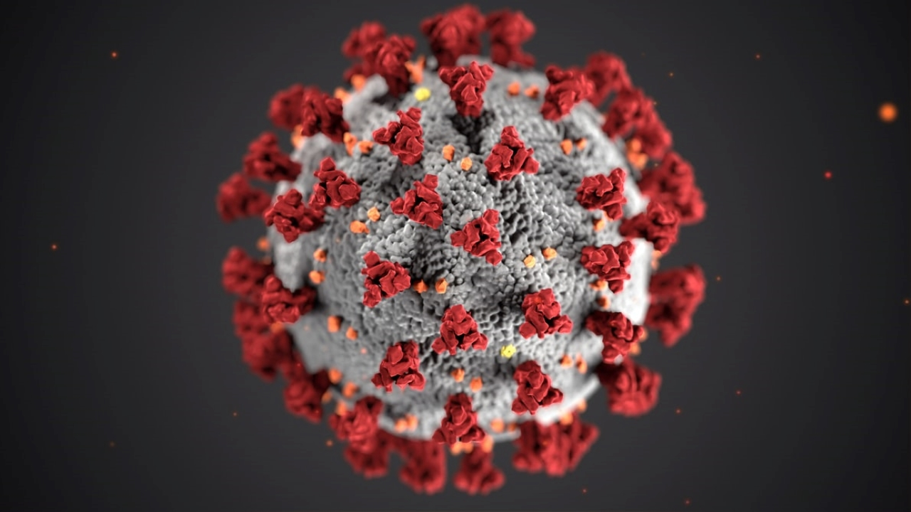
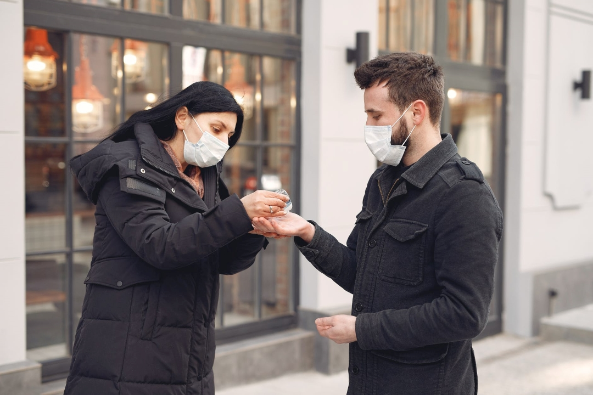
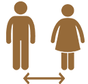

-

-

-
-

-


COVID-19
COVID-19, dat staat voor coronavirus disease 2019, is een besmettelijke ziekte veroorzaakt door het virus SARS-CoV-2 (voorheen 2019-nCoV). Vermoedelijk is het een zoönose. De ziekte dook eind 2019 op en heerst zo sterk, dat vanaf 11 maart 2020 officieel sprake is van de coronapandemie.De ziekte werd voor het eerst geïdentificeerd door medisch personeel in Wuhan, hoofdstad van de provincie Hubei in China, bij patiënten die een longontsteking ontwikkelden zonder een duidelijke oorzaak. Het was dokter Li Wenliang die op 30 december 2019 zijn collega's waarschuwde voor een mogelijke uitbraak van deze ziekte. Vervolgens verspreidde de ziekte zich razendsnel, onder meer door het ontbreken van immuniteit in de bevolking in combinatie met veel besmette internationale reizigers, zodat op 11 maart 2020 de Wereldgezondheidsorganisatie (WHO) bekendmaakte dat er officieel sprake was van een pandemie.
Op 11 februari 2020 maakte de Wereldgezondheidsorganisatie (WHO) bekend dat de ziekte die het virus veroorzaakt de naam COVID-19 zou krijgen, een afkorting van coronavirus disease (coronavirusziekte) met het jaartal van ontdekking. Directeur-generaal Tedros Adhanom Ghebreyesus van de WHO zei dat er een naam nodig was die niet zou verwijzen naar een bepaalde geografische plek, een dier of een groep mensen. Ook moest de naam uitspreekbaar zijn.[3] Dezelfde dag stelde de Coronavirussenwerkgroep van het International Committee on Taxonomy of Viruses (ICTV) voor om voor het virus zelf voortaan de naam ‘severe acute respiratory syndrome coronavirus 2’ te gebruiken, afgekort ‘SARS-CoV-2’, vanwege de gelijkenissen met het SARS-virus dat officieel dezelfde naam draagt, maar dan zonder het volgnummer 2.
Overzicht aantallen
Hieronder ziet u een live overzicht over de Corona virus, welke landen er besmet zijn, het aantal mensen en het aantal doden per land. De tabel wordt automatisch iedere dag geupdated.Wat kun je zelf doen?Blijf op de hoogte van de laatste informatie over de COVID-19-uitbraak, beschikbaar op de website van de WHO en via uw nationale en lokale volksgezondheidsinstantie. Veel landen over de hele wereld hebben gevallen van COVID-19 gezien en verschillende hebben uitbraken gezien. De autoriteiten in China en enkele andere landen zijn erin geslaagd hun uitbraken te vertragen of te stoppen. De situatie is echter onvoorspelbaar, dus controleer regelmatig het laatste nieuws. U kunt uw kansen om besmet te raken of COVID-19 te verspreiden verkleinen door enkele eenvoudige voorzorgsmaatregelen te nemen:

Afstand
Houd een afstand van minimaal 1.5 meter tussen uzelf en iedereen die hoest of niest. Waarom? Wanneer iemand hoest of niest, spuiten ze kleine vloeistofdruppeltjes uit hun neus of mond die een virus kunnen bevatten. Als u te dichtbij bent, kunt u de druppeltjes, inclusief het COVID-19-virus, inademen als de persoon die hoest de ziekte heeft.
Géén handen schudden
Raak ogen, neus en mond niet aan. Waarom? Handen raken veel oppervlakken en kunnen virussen oppikken. Eenmaal besmet kunnen de handen het virus overdragen naar uw ogen, neus of mond. Van daaruit kan het virus je lichaam binnendringen en je ziek maken..
Handen wassen
Maak uw handen regelmatig en grondig schoon met een handwrijfmiddel op alcoholbasis of was ze met water en zeep. Waarom? Je handen wassen met water en zeep of handwrijven op alcoholbasis gebruiken, doodt virussen die op je handen kunnen zitten.